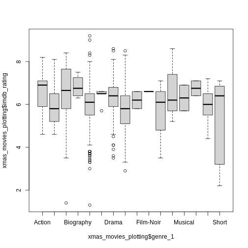

Content from Before we Start
Last updated on 2025-12-09 | Edit this page
Estimated time: 15 minutes
Overview
Questions
- How to find your way around RStudio?
- How to interact with R?
- How to manage your environment?
- How to install packages?
Objectives
- Install latest version of R.
- Install latest version of RStudio.
- Navigate the RStudio GUI.
- Install additional packages using the packages tab.
- Install additional packages using R code.
What is R? What is RStudio?
The term “R” is used to refer to both the programming
language and the software that interprets the scripts written in R.
RStudio is currently a very popular way to not only write your R scripts but also to interact with the R software. RStudio is the most popular IDE (Integrated Development Environmemt) for R. An IDE is a piece of software that provides tools to make programming easier.
To make it easier to interact with R, we will use RStudio. To function correctly, RStudio needs R and therefore both need to be installed on your computer.
Why learn R? 🤶
There are numerous reasons to learn and use R. In the following we will point out a few of them.
R does not involve lots of pointing and clicking
The learning curve might be steeper than with other software, but with R, the results of your analysis do not rely on remembering a succession of pointing and clicking, but instead on a series of written commands, and that’s a good thing! So, if you want to redo your analysis because you collected more data, you don’t have to remember which button you clicked in which order to obtain your results; you just have to run your script again.
Working with scripts makes the steps you used in your analysis clear, and the code you write can be inspected by someone else who can give you feedback and spot mistakes.
Working with scripts forces you to have a deeper understanding of what you are doing, and facilitates your learning and comprehension of the methods you use.
R code is great for reproducibility
Reproducibility is when someone else (including your future self) can obtain the same results from the same dataset when using the same analysis.
R integrates with other tools to generate manuscripts from your code. If you collect more data, or fix a mistake in your dataset, the figures and the statistical tests in your manuscript are updated automatically.
An increasing number of journals and funding agencies expect analyses to be reproducible, so knowing R will give you an edge with these requirements.
R is interdisciplinary and extensible
With 18,000+ packages that can be installed to extend its capabilities, R provides a framework that allows you to combine statistical approaches from many scientific disciplines to best suit the analytical framework you need to analyze your data. For instance, R has packages for image analysis, GIS, time series, population genetics, and a lot more.
R works on data of all shapes and sizes
The skills you learn with R scale easily with the size of your dataset. Whether your dataset has hundreds or millions of lines, it won’t make much difference to you.
R is designed for data analysis. It comes with special data structures and data types that make handling of missing data and statistical factors convenient.
R can connect to spreadsheets, databases, and many other data formats, on your computer or on the web. 🎅
R produces high-quality graphics
The plotting functionalities in R are endless, and allow you to adjust any aspect of your graph to convey most effectively the message from your data.
R has a large and welcoming community
Thousands of people use R daily. Many of them are willing to help you through mailing lists and websites such as Stack Overflow, or on the Posit Community. Questions which are backed up with short, reproducible code snippets are more likely to attract knowledgeable responses.
Not only is R free, but it is also open-source and cross-platform
Anyone can inspect the source code to see how R works. Because of this transparency, there is less chance for mistakes, and if you (or someone else) find some, you can report and fix bugs.
Because R is open source and is supported by a large community of developers and users, there is a very large selection of third-party add-on packages which are freely available to extend R’s native capabilities.


RStudio extends what R can do, and makes it easier to write R code and interact with R. Left photo credit; Right photo credit.
A tour of RStudio
Let’s start by learning about RStudio, which is an Integrated Development Environment (IDE) for working with R.
The RStudio IDE open-source product is free under the Affero General Public License (AGPL) v3. The RStudio IDE is also available with a commercial license and priority email support from Posit Software, Inc.
We will use the RStudio IDE to write code, navigate the files on our computer, inspect the variables we create, and visualize the plots we generate. RStudio can also be used for other things (e.g., version control, developing packages, writing Shiny apps) that we will not cover during the workshop.
One of the advantages of using RStudio is that all the information you need to write code is available in a single window. Additionally, RStudio provides many shortcuts, autocompletion, and highlighting for the major file types you use while developing in R. RStudio makes typing easier and less error-prone.
The RStudio Interface
Let’s take a quick tour of RStudio.

RStudio is divided into four “panes”. The placement of these panes and their content can be customized (see menu, Tools -> Global Options -> Pane Layout).
The Default Layout is: - Top Left - Source: your scripts and documents - Bottom Left - Console: what R would look and be like without RStudio - Top Right - Enviornment/History: look here to see what you have done - Bottom Right - Files and more: see the contents of the project/working directory here, like your Script.R file
Getting set up
It is good practice to keep a set of related data, analyses, and text self-contained in a single folder called the working directory. All of the scripts within this folder can then use relative paths to files. Relative paths indicate where inside the project a file is located (as opposed to absolute paths, which point to where a file is on a specific computer). Working this way makes it a lot easier to move your project around on your computer and share it with others without having to directly modify file paths in the individual scripts.
RStudio provides a helpful set of tools to do this through its “Projects” interface, which not only creates a working directory for you but also remembers its location (allowing you to quickly navigate to it). The interface also (optionally) preserves custom settings and open files to make it easier to resume work after a break.
An easy way to work like this is to create projects in RStudio.
Create a new project and a new script file
- Under the
Filemenu, click onNew project, chooseNew directory, thenNew project - Enter a name for this new folder (or “directory”) and choose a
convenient location for it. This will be your working
directory for working on this project (e.g.,
~/data-carpentry) - Click on
Create project - Create a new file where we will type our scripts. Go to File >
New File > R script. Click the save icon on your toolbar and save
your script as “
script.R”.
The simplest way to open an RStudio project once it has been created
is to navigate through your filesystem to where the project was saved
and double click on the .Rproj (blue cube) file. This will
open RStudio and start your R session in the same
directory as the .Rproj file. All your data, plots and
scripts will now be relative to the project directory. RStudio projects
have the added benefit of allowing you to open multiple projects at the
same time each open to its own project directory. This allows you to
keep multiple projects open without them interfering with each
other.
Organizing your working directory
Using a consistent folder structure across your projects will help keep things organized and make it easy to find/file things in the future. This can be especially helpful when you have multiple projects. In general, you might create directories (folders) for scripts, data, and documents. Here are some examples of suggested directories:
-
data/Use this folder to store your raw data and intermediate datasets. For the sake of transparency and provenance, you should always keep a copy of your raw data accessible and do as much of your data cleanup and preprocessing programmatically (i.e., with scripts, rather than manually) as possible. -
data_output/When you need to modify your raw data, it might be useful to store the modified versions of the datasets in a different folder. -
documents/Used for outlines, drafts, and other text. -
fig_output/This folder can store the graphics that are generated by your scripts. -
scripts/A place to keep your R scripts for different analyses or plotting.
You may want additional directories or subdirectories depending on your project needs, but these should form the backbone of your working directory.

The working directory
The working directory is an important concept to understand. It is the place where R will look for and save files. When you write code for your project, your scripts should refer to files in relation to the root of your working directory and only to files within this structure.
Using RStudio projects makes this easy and ensures that your working
directory is set up properly. If you need to check it, you can use
getwd(). If for some reason your working directory is not
the same as the location of your RStudio project, it is likely that you
opened an R script or RMarkdown file not your
.Rproj file. You should close out of RStudio and open the
.Rproj file by double clicking on the blue cube!
Downloading the data and getting set up
For this lesson we will use the following folders in our working
directory: data/,
data_output/ and
fig_output/. Let’s write them all in
lowercase to be consistent. We can create them using the RStudio
interface by clicking on the “New Folder” button in the file pane
(bottom right), or directly from R by typing at console:
R
dir.create("data")
dir.create("data_output")
dir.create("fig_output")
Begin by downloading the dataset called “xmas_movies.csv”. Place
this downloaded file in the data/ you just created. You can
do this directly from R by copying and pasting this in your terminal
(your instructor can place this chunk of code in the Etherpad):
R
download.file("https://raw.githubusercontent.com/KUBDatalab/R-intro-christmas/main/episodes/data/xmas_movies.csv", "data/xmas_movies.csv", mode = "wb")
Interacting with R
The basis of programming is that we write down instructions for the computer to follow, and then we tell the computer to follow those instructions. We write, or code, instructions in R because it is a common language that both the computer and we can understand. We call the instructions commands and we tell the computer to follow the instructions by executing (also called running) those commands.
There are two main ways of interacting with R: by using the console or by using script files (plain text files that contain your code). The console pane (in RStudio, the bottom left panel) is the place where commands written in the R language can be typed and executed immediately by the computer. It is also where the results will be shown for commands that have been executed. You can type commands directly into the console and press Enter to execute those commands, but they will be forgotten when you close the session.
Because we want our code and workflow to be reproducible, it is better to type the commands we want in the script editor and save the script. This way, there is a complete record of what we did, and anyone (including our future selves!) can easily replicate the results on their computer.
RStudio allows you to execute commands directly from the script editor by using the Ctrl + Enter shortcut (on Mac, Cmd + Return will work). The command on the current line in the script (indicated by the cursor) or all of the commands in selected text will be sent to the console and executed when you press Ctrl + Enter. If there is information in the console you do not need anymore, you can clear it with Ctrl + L. You can find other keyboard shortcuts in this RStudio cheatsheet about the RStudio IDE.
At some point in your analysis, you may want to check the content of a variable or the structure of an object without necessarily keeping a record of it in your script. You can type these commands and execute them directly in the console. RStudio provides the Ctrl + 1 and Ctrl + 2 shortcuts allow you to jump between the script and the console panes.
If R is ready to accept commands, the R console shows a
> prompt. If R receives a command (by typing,
copy-pasting, or sent from the script editor using Ctrl +
Enter), R will try to execute it and, when ready, will show
the results and come back with a new > prompt to wait
for new commands.
If R is still waiting for you to enter more text, the console will
show a + prompt. It means that you haven’t finished
entering a complete command. This is likely because you have not
‘closed’ a parenthesis or quotation, i.e. you don’t have the same number
of left-parentheses as right-parentheses or the same number of opening
and closing quotation marks. When this happens, and you thought you
finished typing your command, click inside the console window and press
Esc; this will cancel the incomplete command and return you
to the > prompt. You can then proofread the command(s)
you entered and correct the error.
Installing additional packages using the packages tab
In addition to the core R installation, there are in excess of 18,000 additional packages which can be used to extend the functionality of R. Many of these have been written by R users and have been made available in central repositories, like the one hosted at CRAN, for anyone to download and install into their own R environment. You should have already installed the packages ‘ggplot2’ and ’dplyr. If you have not, please do so now using these instructions.
Installing additional packages using RStudio
You can see if you have a package installed by looking in the
packages tab (on the lower-right by default). You can also
type the command installed.packages() into the console and
examine the output.

Additional packages can be installed from the ‘packages’ tab. On the packages tab, click the ‘Install’ icon and start typing the name of the package you want in the text box. As you type, packages matching your starting characters will be displayed in a drop-down list so that you can select them.

At the bottom of the Install Packages window is a check box to ‘Install’ dependencies. This is ticked by default, which is usually what you want. Packages can (and do) make use of functionality built into other packages, so for the functionality contained in the package you are installing to work properly, there may be other packages which have to be installed with them. The ‘Install dependencies’ option makes sure that this happens.
Because the install process accesses the CRAN repository, you will need an Internet connection to install packages.
It is also possible to install packages from other repositories, as well as Github or the local file system, but we won’t be looking at these options in this lesson.
Installing additional packages using R code
If you were watching the console window when you started the install of ‘tidyverse’, you may have noticed that the line
R
install.packages("tidyverse")
was written to the console before the start of the installation messages.
You could also have installed the
tidyverse packages by running this command
directly at the R terminal.
Challenge
Use both the Console and the Packages tab to confirm that you have the tidyverse installed.
Scroll through packages tab down to ‘tidyverse’. You can also type a few characters into the searchbox. The ‘tidyverse’ package is really a package of packages, including ‘ggplot2’ and ‘dplyr’, both of which require other packages to run correctly. All of these packages will be installed automatically. Depending on what packages have previously been installed in your R environment, the install of ‘tidyverse’ could be very quick or could take several minutes. As the install proceeds, messages relating to its progress will be written to the console. You will be able to see all of the packages which are actually being installed.
In the console. If you write tidy it should put up if it is installed. Look for tidyverse::
- Use RStudio to write and run R programs.
- Use
install.packages()to install packages (libraries).
Content from Introduction to R
Last updated on 2025-12-09 | Edit this page
Estimated time: 40 minutes
Overview
Questions
- What data types are available in R?
- What is an object?
- How can values be initially assigned to variables of different data types?
- What arithmetic and logical operators can be used?
- How can subsets be extracted from vectors?
- How does R treat missing values?
- How can we deal with missing values in R?
Objectives
- Define the following terms as they relate to R: object, assign, call, function, arguments, options.
- Assign values to objects in R.
- Learn how to name objects.
- Use comments to inform script.
- Solve simple arithmetic operations in R.
- Call functions and use arguments to change their default options.
- Inspect the content of vectors and manipulate their content.
- Subset and extract values from vectors.
- Analyze vectors with missing data.
Creating objects in R
You can get output from R simply by typing math in the console:
R
3 + 5
OUTPUT
[1] 8R
12 / 7
OUTPUT
[1] 1.714286However, to do useful and interesting things, we need to assign
values to objects. To create an object, we need to
give it a name followed by the assignment operator <-,
and the value we want to give it:
R
x <- 3
<- is the assignment operator. It assigns values on
the right to objects on the left. So, after executing
x <- 3, the value of x is 3.
The arrow can be read as 3 goes into
x.
In RStudio, typing Alt + - (push Alt
at the same time as the - key) will write <-
in a single keystroke in a PC, while typing Option +
- (push Option at the same time as the
- key) does the same in a Mac.
Historical
For historical reasons, you can also use = for
assignments, but not in every context. Because of the slight
differences
in syntax, it is good practice to always use <- for
assignments. More generally we prefer the <- syntax over
= because it makes it clear what direction the assignment
is operating (left assignment), and it increases the read-ability of the
code.
Naming objects
Objects can be given any name such as x,
current_temperature, or subject_id. You want
your object names to be explicit and not too long.
They cannot start with a number (2x is not valid, but
x2 is), and R is case sensitive (e.g., age is
different from Age). There are some names that cannot be
used because they are the names of fundamental objects in R (e.g.,
if, else, for, see here
for a complete list). In general, even if it’s allowed, it’s best to
not use them (e.g., c, T, mean,
data, df, weights). If in doubt,
check the help to see if the name is already in use.
It is best to avoid dots (.) within an object name as in
my.dataset. There are many objects in R with dots in their
names for historical reasons, but because dots have a special meaning in
R (for methods) and other programming languages, it’s best to avoid
them.
It is also recommended to use nouns for object names, and verbs for function names. It’s important to be consistent in the styling of your code (where you put spaces, how you name objects, etc.). Using a consistent coding style makes your code clearer to read for your future self and your collaborators.
In R, three popular style guides are Google’s, Jean Fan’s and the tidyverse’s. The tidyverse’s is
very comprehensive and may seem overwhelming at first. You can install
the lintr
package to automatically check for issues in the styling of your
code.
Objects vs. variables
What are known as objects in R are known as
variables in many other programming languages. Depending on
the context, object and variable can have
drastically different meanings. However, in this lesson, the two words
are used synonymously. For more information see: https://cran.r-project.org/doc/manuals/r-release/R-lang.html#Objects
Printing objects
When assigning a value to an object, R does not print anything. You can force R to print the value by using parentheses or by typing the object name:
R
coal_in_pounds <- 1.0 # doesn't print anything
coal_in_pounds # but typing the name of the object print
OUTPUT
[1] 1R
(coal_in_pounds <- 1.0) # putting parenthesis around the call also print
OUTPUT
[1] 1Doing math on objects
Now that R has coal_in_pounds in memory, we can do
arithmetic with it. For instance, we may want to convert this coal in
pounds into coal in kilograms (coal in kilgrams is coal in pounds times
0.45):
R
0.45 * coal_in_pounds
OUTPUT
[1] 0.45We can also change an object’s value by assigning it a new one:
R
coal_in_pounds <- 2.00
0.45 * coal_in_pounds
OUTPUT
[1] 0.9Assigning a value to one object does not automatically change the
values of other objects. For example, let’s store the the amount of coal
in kilograms in a new object, coal_in_kilograms:
R
coal_in_kilograms <- 0.45 * coal_in_pounds
and then change coal_in_pounds to 50.
R
coal_in_pounds <- 50
Exercise
What do you think is the current content of the object
coal_in_pounds? .0.9 or 22.5?
The value of coal_in_kilograms is still 0.9 because you
have not re-run the line
coal_in_kilograms <- 0.45 * coal_in_pounds, since
changing the value of coal_in_pounds.
Exercise
Create two variables rows_of_reindeer and
columns_of_reindeer and assign them values. It should be
noted that, because row is a built-in R function, R Studio
might add “()” after you type row and if you leave the
parentheses you will get unexpected results. This is why you might see
other programmers abbreviate common words. Create a third variable
number_of_reindeer and give it a value based on the current
values of rows_of_reindeer and
columns_of_reindeer. Show that changing the values of
either number_of_reindeer and rows_of_reindeer
does not affect the value of number_of_reindeer.
R
rows_of_reindeer <- 4
columns_of_reindeer <- 2
number_of_reindeer <- rows_of_reindeer * columns_of_reindeer
number_of_reindeer
OUTPUT
[1] 8R
# change the values of rows_of_reindeer and columns_of_reindeer
rows_of_reindeer <- 7
columns_of_reindeer <- 6
# the value of r_area isn't changed
number_of_reindeer
OUTPUT
[1] 8Comments
All programming languages allow the programmer to include comments in
their code. To do this in R we use the # character.
Anything to the right of the # sign and up to the end of
the line is treated as a comment and is ignored by R. You can start
lines with comments or include them after any code on the line.
R
# pounds converted to kilograms
coal_in_pounds <- 1.0
coal_in_kilograms <- coal_in_pounds * 0.45 # convert to kilograms
coal_in_kilograms # print coal in kilograms
OUTPUT
[1] 0.45RStudio makes it easy to comment or uncomment a paragraph: after selecting the lines you want to comment, press at the same time on your keyboard Ctrl + Shift + C. If you only want to comment out one line, you can put the cursor at any location of that line (i.e. no need to select the whole line), then press Ctrl + Shift + C.
Functions and their arguments
Functions are “canned scripts” that automate more complicated sets of
commands including operations assignments, etc. Many functions are
predefined, or can be made available by importing R packages
(more on that later). A function usually gets one or more inputs called
arguments. Functions often (but not always) return a
value. A typical example would be the function
sqrt(). The input (the argument) must be a number, and the
return value (in fact, the output) is the square root of that number.
Executing a function (‘running it’) is called calling the
function. An example of a function call is:
R
b <- sqrt(number_of_reindeer)
Here, the value of a is given to the sqrt()
function, the sqrt() function calculates the square root,
and returns the value which is then assigned to the object
b. This function is very simple, because it takes just one
argument.
The return ‘value’ of a function need not be numerical (like that of
sqrt()), and it also does not need to be a single item: it
can be a set of things, or even a dataset. We’ll see that when we read
data files into R.
Arguments can be anything, not only numbers or filenames, but also other objects. Exactly what each argument means differs per function, and must be looked up in the documentation (see below). Some functions take arguments which may either be specified by the user, or, if left out, take on a default value: these are called options. Options are typically used to alter the way the function operates, such as whether it ignores ‘bad values’, or what symbol to use in a plot. However, if you want something specific, you can specify a value of your choice which will be used instead of the default.
Let’s try a function that can take multiple arguments:
round().
R
round(3.14159)
OUTPUT
[1] 3Here, we’ve called round() with just one argument,
3.14159, and it has returned the value 3.
That’s because the default is to round to the nearest whole number. If
we want more digits we can see how to do that by getting information
about the round function. We can use
args(round) or look at the help for this function using
?round.
R
args(round)
OUTPUT
function (x, digits = 0, ...)
NULLR
?round
We see that if we want a different number of digits, we can type
digits=2 or however many we want.
R
round(3.14159, digits = 2)
OUTPUT
[1] 3.14If you provide the arguments in the exact same order as they are defined you don’t have to name them:
R
round(3.14159, 2)
OUTPUT
[1] 3.14And if you do name the arguments, you can switch their order:
R
round(digits = 2, x = 3.14159)
OUTPUT
[1] 3.14It’s good practice to put the non-optional arguments (like the number you’re rounding) first in your function call, and to specify the names of all optional arguments. If you don’t, someone reading your code might have to look up the definition of a function with unfamiliar arguments to understand what you’re doing.
Exercise
Type in ?round at the console and then look at the
output in the Help pane. What other functions exist that are similar to
round? How do you use the digits parameter in
the round function?
Vectors and data types
A vector is the most common and basic data type in R, and is pretty
much the workhorse of R. A vector is composed by a series of values. We
can assign a series of values to a vector using the c()
function. For example we can create a vector containing the score of
movies on imdb and assign it to an object
xmas_movies_rating:
R
imdb_rating <- c(7.6, 7.7, 6.4, 8.2)
imdb_rating
OUTPUT
[1] 7.6 7.7 6.4 8.2The vector imdb_rating contains numbers, but a vector
can also contain characters. For example, we can have a vector of movie
titles corresponding to the scores (title):
R
title <- c("Love Actually", "Home Alone", "The Grinch", "Die Hard")
title
OUTPUT
[1] "Love Actually" "Home Alone" "The Grinch" "Die Hard" The quotes around “Die Hard”, etc. are essential. Without the quotes
R will assume there are objects called Die Hard etc. As
these objects don’t exist in R’s memory, there will be an error
message.
An important feature of a vector, is that all of the elements are the same type of data.
Vectors and datatypes
An atomic vector is the simplest R data
type and is a linear vector of a single type. Above, we saw 2
of the 6 main atomic vector types that R uses:
"character" and "numeric" (or
"double"). These are the basic building blocks that all R
objects are built from. The other 4 atomic vector types
are:
-
"logical"forTRUEandFALSE(the boolean data type) -
"integer"for integer numbers (e.g.,2L, theLindicates to R that it’s an integer) -
"complex"to represent complex numbers with real and imaginary parts (e.g.,1 + 4i) and that’s all we’re going to say about them -
"raw"for bitstreams that we won’t discuss further
Vectors are one of the many data structures that R
uses. Other important ones are lists (list), matrices
(matrix), data frames (data.frame), factors
(factor) and arrays (array).
The function class() indicates the class (the type of
element) of an object:
R
class(imdb_rating)
OUTPUT
[1] "numeric"R
class(title)
OUTPUT
[1] "character"The function str() provides an overview of the structure
of an object and its elements. It is a useful function when working with
large and complex objects:
R
str(imdb_rating)
OUTPUT
num [1:4] 7.6 7.7 6.4 8.2R
str(title)
OUTPUT
chr [1:4] "Love Actually" "Home Alone" "The Grinch" "Die Hard"As you can see there are many functions that allow you to inspect the
content of a vector. Another example is length() that tells
you how many elements are in a particular vector:
R
length(imdb_rating)
OUTPUT
[1] 4You can use the c() function to add other elements to
your vector:
R
genre_1 <- c("Comedy", "Animation")
genre_1
OUTPUT
[1] "Comedy" "Animation"R
genre_1 <- c(genre_1, "Action") # add to the end of the vector
genre_1 <- c("Comedy", genre_1) # add to the beginning of the vector
genre_1
OUTPUT
[1] "Comedy" "Comedy" "Animation" "Action" First the vector genre_1 is created with two values.
Then the value “Action” is added to the end of the vector, and the
result is saved back into genre_1. After that the value
“Comedy” is added to the front of the vector, and again saved back into
genre_1
We can do this over and over again to grow a vector, or assemble a dataset. As we program, this may be useful to add results that we are collecting or calculating.
Exercise
We’ve seen that atomic vectors can be of type character, numeric (or double), integer, and logical. But what happens if we try to mix these types in a single vector?
R implicitly converts them to all be the same type.
Exercise (continued)
What will happen in each of these examples? (hint: use
class() to check the data type of your objects):
R
num_char <- c(1, 2, 3, "a")
num_logical <- c(1, 2, 3, TRUE)
char_logical <- c("a", "b", "c", TRUE)
tricky <- c(1, 2, 3, "4")
Exercise (continued)
Why do you think it happens?
Vectors can be of only one data type. R tries to convert (coerce) the content of this vector to find a “common denominator” that doesn’t lose any information.
Exercise (continued)
How many values in combined_logical are
"TRUE" (as a character) in the following example:
R
num_logical <- c(1, 2, 3, TRUE)
char_logical <- c("a", "b", "c", TRUE)
combined_logical <- c(num_logical, char_logical)
Only one. There is no memory of past data types, and the coercion
happens the first time the vector is evaluated. Therefore, the
TRUE in num_logical gets converted into a
1 before it gets converted into "1" in
combined_logical.
Exercise (continued)
You’ve probably noticed that objects of different types get converted into a single, shared type within a vector. In R, we call converting objects from one class into another class coercion. These conversions happen according to a hierarchy, whereby some types get preferentially coerced into other types. Can you draw a diagram that represents the hierarchy of how these data types are coerced?
Subsetting vectors
If we want to extract one or several values from a vector, we must provide one or several indices in square brackets. For instance:
R
title[2]
OUTPUT
[1] "Home Alone"R
title[c(3, 2)]
OUTPUT
[1] "The Grinch" "Home Alone"First R return the second element from the title vector, and after that R returns the third and second element from the title vector.
R indices start at 1. Programming languages like Fortran, MATLAB, Julia, and R start counting at 1, because that’s what human beings typically do. Languages in the C family (including C++, Java, Perl, and Python) count from 0 because that’s simpler for computers to do.
We can also repeat the indices to create an object with more elements than the original one:
R
more_titles <- title[c(1, 2, 3, 2, 1, 3)]
more_titles
OUTPUT
[1] "Love Actually" "Home Alone" "The Grinch" "Home Alone"
[5] "Love Actually" "The Grinch" Here we create an new vector more_titles containing the
elements from title in the order given in the c
function
Conditional subsetting
Sometimes we only want a subset of a vector, but we do not know the
exact index number. A common way of getting a subset without knowing the
index numbers, is by using a logical vector. TRUE will
select the element with the same index, while FALSE will
not:
R
imdb_rating[c(TRUE, FALSE, TRUE, TRUE)]
OUTPUT
[1] 7.6 6.4 8.2Typically, these logical vectors are not typed by hand, but are the output of other functions or logical tests. For instance, if you wanted to select only the imdb_scores above 5:
R
imdb_rating > 5 # will return logicals with TRUE for the indices that meet the condition
OUTPUT
[1] TRUE TRUE TRUE TRUER
## so we can use this to select only the values above 5
imdb_rating[imdb_rating > 5]
OUTPUT
[1] 7.6 7.7 6.4 8.2You can combine multiple tests using & (both
conditions are true (AND)) or | (at least one of the
conditions is true, (OR)):
R
imdb_rating[imdb_rating < 6 | imdb_rating > 7]
OUTPUT
[1] 7.6 7.7 8.2R
imdb_rating[imdb_rating >= 6 & imdb_rating <= 7]
OUTPUT
[1] 6.4Here, < stands for “less than”, > for
“greater than”, >= for “greater than or equal to”, and
== for “equal to”. The double equal sign == is
a test for numerical equality between the left and right hand sides, and
should not be confused with the single = sign, which
performs variable assignment (similar to <-).
A common task is to search for certain strings in a vector. One could
use the “or” operator | to test for equality to multiple
values, but this can quickly become tedious.
R
title[title == "Die Hard" | title == "Home Alone"] # returns both Die Hard and Home Alone
OUTPUT
[1] "Home Alone" "Die Hard" The function %in% allows you to test if any of the
elements of a search vector (on the right hand side) are found in the
target vector (on the left hand side):
R
title %in% c("Die Hard", "Home Alone")
OUTPUT
[1] FALSE TRUE FALSE TRUENote that the output is the same length as the search vector on the
left hand side, because %in% checks whether each element of
the search vector is found somewhere in the target vector. Thus, you can
use %in% to select the elements in the search vector that
appear in your target vector:
R
title[title %in% c("Die Hard", "Home Alone")]
OUTPUT
[1] "Home Alone" "Die Hard" You can also use a vector with TRUE and
FALSE based on one vector to find informations in another
vectore. For instance if we want the imdb scores for the movies “FTA”
and “Dostana” we can do it like this.
R
imdb_score[title %in% c("Die Hard", "Home Alone")]
ERROR
Error: object 'imdb_score' not foundMissing data
As R was designed to analyze datasets, it includes the concept of
missing data (which is uncommon in other programming languages). Missing
data are represented in vectors as NA.
When doing operations on numbers, most functions will return
NA if the data you are working with include missing values.
This feature makes it harder to overlook the cases where you are dealing
with missing data. You can add the argument na.rm=TRUE to
calculate the result while ignoring the missing values.
R
#Makes an new vector with NA values
imdb_rating_na <- c(imdb_rating, NA, 8, NA)
#tries to calculate mean - without ignoring NA values
mean(imdb_rating_na)
OUTPUT
[1] NAR
#tries to find the maximum value - without ignoring NA values
max(imdb_rating_na)
OUTPUT
[1] NAR
#tries to calculate mean - telling R to ignore NA values
mean(imdb_rating_na, na.rm = TRUE)
OUTPUT
[1] 7.58R
#tries to find the maximum value - telling R to ignore NA values
max(imdb_rating_na, na.rm = TRUE)
OUTPUT
[1] 8.2If your data include missing values, you may want to become familiar
with the functions is.na(), na.omit(), and
complete.cases(). See below for examples.
R
## Extract those elements which are not missing values.
imdb_rating_na[!is.na(imdb_rating_na)]
OUTPUT
[1] 7.6 7.7 6.4 8.2 8.0R
## Count the number of missing values.
sum(is.na(imdb_rating_na))
OUTPUT
[1] 2R
## Returns the object with incomplete cases removed. The returned object is an atomic vector of type `"numeric"` (or `"double"`).
na.omit(imdb_rating_na)
OUTPUT
[1] 7.6 7.7 6.4 8.2 8.0
attr(,"na.action")
[1] 5 7
attr(,"class")
[1] "omit"R
## Extract those elements which are complete cases. The returned object is an atomic vector of type `"numeric"` (or `"double"`).
imdb_rating_na[complete.cases(imdb_rating_na)]
OUTPUT
[1] 7.6 7.7 6.4 8.2 8.0Recall that you can use the typeof() function to find
the type of your atomic vector.
Data frames
Normaly we do not work with data in seperate vectors. Instead it would be in a spreadsheet like format. In R this is called data frame
A dataframe is made up by columns of vectors, so we can combine the three vectors to a dataframe.
R
df <- data.frame(title, imdb_rating, genre_1)
df
OUTPUT
title imdb_rating genre_1
1 Love Actually 7.6 Comedy
2 Home Alone 7.7 Comedy
3 The Grinch 6.4 Animation
4 Die Hard 8.2 ActionSo it is possible to make an data frame directly in R, but most of the time data are collected outside R, and afterwards imported to R.
Now that we have learned about writing code, and the basics of R’s data structures, we are ready to start working a real dataset, and learn more about data frames.
- Access individual values by location using
[]. - Access arbitrary sets of data using
[c(...)]. - Use logical operations and logical vectors to access subsets of data.
Content from Starting with Data
Last updated on 2025-12-09 | Edit this page
Estimated time: 40 minutes
Overview
Questions
- What is a data.frame?
- How can I read a complete csv file into R?
- How can I get basic summary information about my dataset?
Objectives
- Describe what a data frame is.
- Load external data from a .csv file into a data frame.
- Summarize the contents of a data frame.
- Subset and extract values from data frames.
What are data frames and tibbles?
Data frames are the de facto data structure for tabular data
in R, and what we use for data processing, statistics, and
plotting.
A data frame is the representation of data in the format of a table where the columns are vectors that all have the same length. Data frames are analogous to the more familiar spreadsheet in programs such as Excel, with one key difference. Because columns are vectors, each column must contain a single type of data (e.g., characters, integers, factors). For example, here is a figure depicting a data frame comprising a numeric, a character, and a logical vector.
 {alt
= ‘A 3 by 3 data frame with columns showing numeric, character and
logical values.’}
{alt
= ‘A 3 by 3 data frame with columns showing numeric, character and
logical values.’}
As shown in the previous lesson data frames can be created by hand,
but most commonly they are generated by functions eg.
read_csv() or read_table() - in other words,
by importing spreadsheets from your hard drive (or the web). We will now
demonstrate how to import tabular data using
read_csv().
Presentation of the xmas_movies dataset
The data set we will import is xmas_movies.csv. It is list of Christmas movies IMDB. Each row holds information about a single movie , and the columns represent:
| column_name | description |
|---|---|
| title | The title of the movie or serie |
| rating | Information about which age group the movie is suitable for |
| runtime | How long the movie is |
| imdb_rating | The score of the movie or serie in the IMDB database |
| tmdb_rating | The score of the movie or serie in the movie database |
| meta_score | A combination different scores |
| genre_1 | Genre |
| genre_2 | Genre |
| genre_3 | Genre |
| description | A short description of the movie |
| director | Name of the director of the movie |
| stars | The movie’s main actors |
| votes | The number of votes |
| gross | The movie’s gross earnings |
Importing data
You are going load the data in R’s memory using the function
read_csv() from the readr
package, which is part of the tidyverse;
learn more about the tidyverse collection of packages here.
readr gets installed as part as the
tidyverse installation. When you load the
tidyverse
(library(tidyverse)), the core packages (the packages used
in most data analyses) get loaded, including
readr.
##read.csv() vs. read_csv()
If you were to type in the code above, it is likely that the
read.csv() function would appear in the automatically
populated list of functions. This function is different from the
read_csv() function, as it is included in the “base”
packages that come pre-installed with R. Overall,
read.csv() behaves similar to read_csv(), with
a few notable differences. First, read.csv() coerces column
names with spaces and/or special characters to different names
(e.g. interview date becomes interview.date).
Second, read.csv() stores data as a
data.frame, where read_csv() stores data as a
tibble. We prefer tibbles because they have nice printing
properties among other desirable qualities. Read more about tibbles
here.
Before we can use the read_csv() we need to load the
tidyverse package.
R
library(tidyverse)
After this we can read in the data set.
R
xmas_movies <- read_csv("data/xmas_movies.csv", na = c("NA", "NULL"))
Note
read_csv() assumes that fields are delimited by commas.
However, in several countries, the comma is used as a decimal separator
and the semicolon (;) is used as a field delimiter. If you want to read
in this type of files in R, you can use the read_csv2
function. It behaves exactly like read_csv but uses
different parameters for the decimal and the field separators. If you
are working with another format, they can be both specified by the user.
Check out the help for read_csv() by typing
?read_csv to learn more. There is also the
read_tsv() for tab-separated data files, and
read_delim() allows you to specify more details about the
structure of your file.
The first argument read_csv takes is the path to til
file. The specific path is dependent on the specific setup. If you have
followed the recommendations for structuring your project-folder, it
should be the above command.
If you recall, a dataset can include missing values. They can be
represented in different ways, so the secsecond argument tell R to
automatically convert all the “NULL” or “NA” entries in the dataset into
NA.
By using <- we assign the dataset to the object
xmas_movies. Because we assign the data frame to an object
no outpu is created. If we want to check that our data has been loaded,
we can see the content of the data frame by typing its name:
xmas_movies in the console.
R
xmas_movies
## Try also
## view(xmas_movies)
## head(xmas_movies)
OUTPUT
# A tibble: 873 × 14
title rating runtime imdb_rating tmdb_rating meta_score genre_1 genre_2
<chr> <chr> <dbl> <dbl> <dbl> <dbl> <chr> <chr>
1 Love Actua… R 135 7.6 4.3 55 Comedy Drama
2 Home Alone PG 103 7.7 8.8 63 Comedy Family
3 National L… PG-13 97 7.5 7.1 49 Comedy <NA>
4 Elf PG 97 7.1 6 66 Advent… Comedy
5 How the Gr… PG 104 6.3 2.5 46 Comedy Family
6 The Grinch PG 85 6.4 2.5 51 Animat… Comedy
7 Die Hard R 132 8.2 1.8 72 Action Thrill…
8 Home Alone… PG 120 6.9 8.1 46 Advent… Comedy
9 The Polar … G 100 6.6 6 61 Animat… Advent…
10 It's a Won… PG 130 8.6 6.9 89 Drama Family
# ℹ 863 more rows
# ℹ 6 more variables: genre_3 <chr>, description <chr>, director <chr>,
# stars <chr>, votes <dbl>, gross <chr>Note that read_csv() actually loads the data as a
tibble. A tibble is an extension of R data frames used by
the tidyverse. When the data is read using
read_csv(), it is stored in an object of class
tbl_df, tbl, and data.frame. You
can see the class of an object with
R
class(xmas_movies)
OUTPUT
[1] "spec_tbl_df" "tbl_df" "tbl" "data.frame" As a tibble, the type of data included in each column is
listed in an abbreviated fashion below the column names. For instance,
here runtime is a column of floating point numbers
(abbreviated <dbl> for the word ‘double’), and
title is a column of characters
(<chr>).
Inspecting data frames
When calling a tbl_df object (like
xmas_movies here), there is already a lot of information
about our data frame being displayed such as the number of rows, the
number of columns, the names of the columns, and as we just saw the
class of data stored in each column. However, there are functions to
extract this information from data frames. Here is a non-exhaustive list
of some of these functions. Let’s try them out!
Size:
-
dim(xmas_movies)- returns a vector with the number of rows as the first element, and the number of columns as the second element (the dimensions of the object) -
nrow(xmas_movies)- returns the number of rows -
ncol(xmas_movies)- returns the number of columns
Content:
-
head(xmas_movies)- shows the first 6 rows -
tail(xmas_movies)- shows the last 6 rows
Names:
-
names(xmas_movies)- returns the column names (synonym ofcolnames()fordata.frameobjects)
Summary:
-
str(xmas_movies)- structure of the object and information about the class, length and content of each column -
summary(xmas_movies)- summary statistics for each column -
glimpse(xmas_movies)- returns the number of columns and rows of the tibble, the names and class of each column, and previews as many values will fit on the screen. Unlike the other inspecting functions listed above,glimpse()is not a “base R” function so you need to have thedplyrortibblepackages loaded to be able to execute it.
Note: most of these functions are “generic.” They can be used on other types of objects besides data frames or tibbles.
Indexing and subsetting data frames
Our xmas_movies data frame has rows and columns (it has
2 dimensions). In practice, we may not need the entire data frame; for
instance, we may only be interested in a subset of the observations (the
rows) or a particular set of variables (the columns) - just as we did
with vectors in 1 dimension. If we want to extract some specific data
from it, we need to specify the “coordinates” we want from it. Row
numbers come first, followed by column numbers.
R
## first element in the first column of the tibble
xmas_movies[1, 1]
OUTPUT
# A tibble: 1 × 1
title
<chr>
1 Love ActuallyR
## first element in the 6th column of the tibble
xmas_movies[1, 6]
OUTPUT
# A tibble: 1 × 1
meta_score
<dbl>
1 55R
## first column of the tibble (as a vector, truncated, rather than showing all 5850 values)
xmas_movies[[1]] %>% head()
OUTPUT
[1] "Love Actually"
[2] "Home Alone"
[3] "National Lampoon's Christmas Vacation"
[4] "Elf"
[5] "How the Grinch Stole Christmas"
[6] "The Grinch" R
## first column of the tibble
xmas_movies[1]
OUTPUT
# A tibble: 873 × 1
title
<chr>
1 Love Actually
2 Home Alone
3 National Lampoon's Christmas Vacation
4 Elf
5 How the Grinch Stole Christmas
6 The Grinch
7 Die Hard
8 Home Alone 2: Lost in New York
9 The Polar Express
10 It's a Wonderful Life
# ℹ 863 more rowsR
## first three elements in the 7th column of the tibble
xmas_movies[1:3, 7]
OUTPUT
# A tibble: 3 × 1
genre_1
<chr>
1 Comedy
2 Comedy
3 Comedy R
## the 3rd row of the tibble
xmas_movies[3, ]
OUTPUT
# A tibble: 1 × 14
title rating runtime imdb_rating tmdb_rating meta_score genre_1 genre_2
<chr> <chr> <dbl> <dbl> <dbl> <dbl> <chr> <chr>
1 National La… PG-13 97 7.5 7.1 49 Comedy <NA>
# ℹ 6 more variables: genre_3 <chr>, description <chr>, director <chr>,
# stars <chr>, votes <dbl>, gross <chr>R
## equivalent to head_xmas_movies <- head(xmas_movies)
head_xmas_movies <- xmas_movies[1:6, ]
: is a special function that creates numeric vectors of
integers in increasing or decreasing order, test 1:10 and
10:1 for instance.
You can also exclude certain indices of a data frame using the
“-” sign:
R
xmas_movies[, -1] # The whole tibble, except the first column
OUTPUT
# A tibble: 873 × 13
rating runtime imdb_rating tmdb_rating meta_score genre_1 genre_2 genre_3
<chr> <dbl> <dbl> <dbl> <dbl> <chr> <chr> <chr>
1 R 135 7.6 4.3 55 Comedy Drama Romance
2 PG 103 7.7 8.8 63 Comedy Family <NA>
3 PG-13 97 7.5 7.1 49 Comedy <NA> <NA>
4 PG 97 7.1 6 66 Adventure Comedy Family
5 PG 104 6.3 2.5 46 Comedy Family Fantasy
6 PG 85 6.4 2.5 51 Animation Comedy Family
7 R 132 8.2 1.8 72 Action Thriller <NA>
8 PG 120 6.9 8.1 46 Adventure Comedy Crime
9 G 100 6.6 6 61 Animation Adventure Comedy
10 PG 130 8.6 6.9 89 Drama Family Fantasy
# ℹ 863 more rows
# ℹ 5 more variables: description <chr>, director <chr>, stars <chr>,
# votes <dbl>, gross <chr>R
xmas_movies[-c(7:131), ] # Equivalent to head(interviews)
OUTPUT
# A tibble: 748 × 14
title rating runtime imdb_rating tmdb_rating meta_score genre_1 genre_2
<chr> <chr> <dbl> <dbl> <dbl> <dbl> <chr> <chr>
1 Love Actua… R 135 7.6 4.3 55 Comedy Drama
2 Home Alone PG 103 7.7 8.8 63 Comedy Family
3 National L… PG-13 97 7.5 7.1 49 Comedy <NA>
4 Elf PG 97 7.1 6 66 Advent… Comedy
5 How the Gr… PG 104 6.3 2.5 46 Comedy Family
6 The Grinch PG 85 6.4 2.5 51 Animat… Comedy
7 The Christ… <NA> 86 5 3.1 NA Comedy Romance
8 The Apartm… Appro… 125 8.3 2.2 94 Comedy Drama
9 A Season f… TV-G 90 7 4 NA Romance <NA>
10 A Princess… TV-G 91 6.3 8.7 NA Comedy Drama
# ℹ 738 more rows
# ℹ 6 more variables: genre_3 <chr>, description <chr>, director <chr>,
# stars <chr>, votes <dbl>, gross <chr>tibbles can be subset by calling indices (as shown
previously), but also by calling their column names directly:
R
xmas_movies["title"] # Result is a tibble
xmas_movies[, "title"] # Result is a tibble
xmas_movies[["title"]] # Result is a vector
xmas_moviese$title # Result is a vector
In RStudio, you can use the autocompletion feature to get the full and correct names of the columns.
Tip
Indexing a tibble with [ or [[
or $ always results in a tibble. However, note
this is not true in general for data frames, so be careful! Different
ways of specifying these coordinates can lead to results with different
classes. This is covered in the Software Carpentry lesson R for
Reproducible Scientific Analysis.
Exercise
Create a tibble (
xmas_movies_100) containing only the data in row 100 of thexmas_moviesdataset.-
Notice how
nrow()gave you the number of rows in the tibble?- Use that number to pull out just that last row in the tibble.
- Compare that with what you see as the last row using
tail()to make sure it’s meeting expectations. - Pull out that last row using
nrow()instead of the row number. - Create a new tibble (
xmas_movies_last) from that last row.
Using the number of rows in the xmas_movies dataset that you found in question 2, extract the row that is in the middle of the dataset. Store the content of this middle row in an object named
xmas_movies_middle.
(hint: This dataset has an odd number of rows, so finding the middle is a bit trickier than dividing n_rows by 2. Use the median( ) function and what you’ve learned about sequences in R to extract the middle row!
- Combine
nrow()with the-notation above to reproduce the behavior ofhead(interviews), keeping just the first through 6th rows of the interviews dataset.
R
# 1.
xmas_movies_100 <- xmas_movies[100, ]
# 2.
# Saving `n_rows` to improve readability and reduce duplication
n_rows <- nrow(xmas_movies)
xmas_movies_last <- xmas_movies[n_rows, ]
# 3.
xmas_movies_middle <- xmas_movies[median(1:n_rows), ]
# 4.
xmas_movies_head <- xmas_movies[-(7:n_rows), ]
- Use read_csv to read tabular data in R.
Content from Data Wrangling with dplyr and tidyr
Last updated on 2025-12-09 | Edit this page
Estimated time: 30 minutes
do
Overview
Questions
- How can I select specific rows and/or columns from a dataframe?
- How can I combine multiple commands into a single command?
- How can I create new columns or remove existing columns from a dataframe?
- How can I reformat a dataframe to meet my needs?
Objectives
- Describe the purpose of an R package and the
dplyrandtidyrpackages. - Select certain columns in a dataframe with the
dplyrfunctionselect. - Select certain rows in a dataframe according to filtering conditions
with the
dplyrfunctionfilter. - Link the output of one
dplyrfunction to the input of another function with the ‘pipe’ operator%>%. - Add new columns to a dataframe that are functions of existing
columns with
mutate. - Use the split-apply-combine concept for data analysis.
- Use
summarize,group_by, andcountto split a dataframe into groups of observations, apply a summary statistics for each group, and then combine the results. - Describe the concept of a wide and a long table format and for which purpose those formats are useful.
- Describe the roles of variable names and their associated values when a table is reshaped.
- Reshape a dataframe from long to wide format and back with the
pivot_widerandpivot_longercommands from thetidyrpackage. - Export a dataframe to a csv file.
dplyr is a package for making tabular
data wrangling easier by using a limited set of functions that can be
combined to extract and summarize insights from your data. It pairs
nicely with tidyr which enables you to
swiftly convert between different data formats (long vs. wide) for
plotting and analysis.
Similarly to readr,
dplyr and
tidyr are also part of the tidyverse.
These packages 🎁 were loaded in R’s memory when we called
library(tidyverse) earlier.
Note
The packages in the tidyverse, namely
dplyr, tidyr
and ggplot2 accept both the British
(e.g. summarise) and American (e.g. summarize)
spelling variants of different function and option names. For this
lesson, we utilize the American spellings of different functions;
however, feel free to use the regional variant for where you are
teaching.
What is an R package 🎁?
The package dplyr provides easy tools
for the most common data wrangling tasks. It is built to work directly
with dataframes, with many common tasks optimized by being written in a
compiled language (C++) (not all R packages are written in R!).
The package tidyr addresses the common
problem of wanting to reshape your data for plotting and use by
different R functions. Sometimes we want data sets where we have one row
per measurement. Sometimes we want a dataframe where each measurement
type has its own column, and rows are instead more aggregated groups.
Moving back and forth between these formats is nontrivial, and
tidyr gives you tools for this and more
sophisticated data wrangling.
But there are also packages available for a wide range of tasks
including building plots (ggplot2, which
we’ll see later), downloading data from the NCBI database, or performing
statistical analysis on your data set. Many packages such as these are
housed on, and downloadable from, the Comprehensive
R Archive Network
(CRAN) using install.packages. This function makes the
package accessible by your R installation with the command
library(), as you did with tidyverse
earlier.
To easily access the documentation for a package within R or RStudio,
use help(package = "package_name").
To learn more about dplyr and
tidyr after the workshop, you may want to
check out this handy
data transformation with dplyr
cheatsheet and this one
about tidyr.
Learning dplyr and
tidyr
We are working with the same dataset as earlier. Refer to the previous lesson to download the data, if you do not have it loaded.
We’re going to learn some of the most common
dplyr functions:
-
select(): subset columns -
filter(): subset rows on conditions -
mutate(): create new columns by using information from other columns -
group_by()andsummarize(): create summary statistics on grouped data -
arrange(): sort results -
count(): count discrete values
Selecting columns and filtering rows ✨
To select columns of a dataframe, use select(). The
first argument to this function is the dataframe
(xmas_movies), and the subsequent arguments are the columns
to keep, separated by commas. Alternatively, if you are selecting
columns adjacent to each other, you can use a : to select a
range of columns, read as “select columns from ___ to ___.”
R
# to select columns throughout the dataframe
select(xmas_movies, title, description)
OUTPUT
# A tibble: 873 × 2
title description
<chr> <chr>
1 Love Actually Follows the lives of eight very differ…
2 Home Alone An eight-year-old troublemaker, mistak…
3 National Lampoon's Christmas Vacation The Griswold family's plans for a big …
4 Elf Raised as an oversized elf, Buddy trav…
5 How the Grinch Stole Christmas On the outskirts of Whoville lives a g…
6 The Grinch A grumpy Grinch plots to ruin Christma…
7 Die Hard A New York City police officer tries t…
8 Home Alone 2: Lost in New York One year after Kevin McCallister was l…
9 The Polar Express On Christmas Eve, a young boy embarks …
10 It's a Wonderful Life An angel is sent from Heaven to help a…
# ℹ 863 more rowsR
# to select a series of connected columns
select(xmas_movies, title:description)
OUTPUT
# A tibble: 873 × 10
title rating runtime imdb_rating tmdb_rating meta_score genre_1 genre_2
<chr> <chr> <dbl> <dbl> <dbl> <dbl> <chr> <chr>
1 Love Actua… R 135 7.6 4.3 55 Comedy Drama
2 Home Alone PG 103 7.7 8.8 63 Comedy Family
3 National L… PG-13 97 7.5 7.1 49 Comedy <NA>
4 Elf PG 97 7.1 6 66 Advent… Comedy
5 How the Gr… PG 104 6.3 2.5 46 Comedy Family
6 The Grinch PG 85 6.4 2.5 51 Animat… Comedy
7 Die Hard R 132 8.2 1.8 72 Action Thrill…
8 Home Alone… PG 120 6.9 8.1 46 Advent… Comedy
9 The Polar … G 100 6.6 6 61 Animat… Advent…
10 It's a Won… PG 130 8.6 6.9 89 Drama Family
# ℹ 863 more rows
# ℹ 2 more variables: genre_3 <chr>, description <chr>To choose rows based on specific criteria, we can use the
filter() function. The argument after the dataframe is the
condition we want our final dataframe to adhere to (e.g. rating is
PG-13):
R
# filters observations where rating name is "PG-13"
filter(xmas_movies, rating == "PG-13")
OUTPUT
# A tibble: 24 × 14
title rating runtime imdb_rating tmdb_rating meta_score genre_1 genre_2
<chr> <chr> <dbl> <dbl> <dbl> <dbl> <chr> <chr>
1 National L… PG-13 97 7.5 7.1 49 Comedy <NA>
2 Scrooged PG-13 101 6.9 7.9 38 Comedy Drama
3 Spirited PG-13 127 6.6 3 55 Comedy Family
4 Last Chris… PG-13 103 6.5 4.7 50 Comedy Drama
5 Four Chris… PG-13 88 5.7 3.6 41 Comedy Drama
6 Happiest S… PG-13 102 6.6 6 69 Comedy Romance
7 Shazam! PG-13 132 7 3.4 71 Action Advent…
8 Surviving … PG-13 91 5.4 3.5 19 Comedy Romance
9 Batman Ret… PG-13 126 7.1 7.4 68 Action Crime
10 Edward Sci… PG-13 105 7.9 2.9 74 Drama Fantasy
# ℹ 14 more rows
# ℹ 6 more variables: genre_3 <chr>, description <chr>, director <chr>,
# stars <chr>, votes <dbl>, gross <chr>We can also specify multiple conditions within the
filter() function. We can combine conditions using either
“and” or “or” statements. In an “and” statement, an observation (row)
must meet every criteria to be included in the
resulting dataframe. To form “and” statements within dplyr, we can pass
our desired conditions as arguments in the filter()
function, separated by commas:
R
# filters observations with "and" operator (comma)
# output dataframe satisfies ALL specified conditions
filter(xmas_movies, rating == "PG-13",
runtime > 100,
imdb_rating < 6.0)
OUTPUT
# A tibble: 1 × 14
title rating runtime imdb_rating tmdb_rating meta_score genre_1 genre_2
<chr> <chr> <dbl> <dbl> <dbl> <dbl> <chr> <chr>
1 A Californi… PG-13 106 5.8 8.2 NA Comedy Drama
# ℹ 6 more variables: genre_3 <chr>, description <chr>, director <chr>,
# stars <chr>, votes <dbl>, gross <chr>We can also form “and” statements with the &
operator instead of commas:
R
# filters observations with "&" logical operator
# output dataframe satisfies ALL specified conditions
filter(xmas_movies, rating == "PG-13" &
runtime > 100 &
imdb_rating < 6.0)
OUTPUT
# A tibble: 1 × 14
title rating runtime imdb_rating tmdb_rating meta_score genre_1 genre_2
<chr> <chr> <dbl> <dbl> <dbl> <dbl> <chr> <chr>
1 A Californi… PG-13 106 5.8 8.2 NA Comedy Drama
# ℹ 6 more variables: genre_3 <chr>, description <chr>, director <chr>,
# stars <chr>, votes <dbl>, gross <chr>In an “or” statement, observations must meet at least one of the specified conditions. To form “or” statements we use the logical operator for “or,” which is the vertical bar (|):
R
# filters observations with "|" logical operator
# output dataframe satisfies AT LEAST ONE of the specified conditions
filter(xmas_movies, rating == "PG-13" |
runtime > 100 |
imdb_rating < 6.0)
OUTPUT
# A tibble: 398 × 14
title rating runtime imdb_rating tmdb_rating meta_score genre_1 genre_2
<chr> <chr> <dbl> <dbl> <dbl> <dbl> <chr> <chr>
1 Love Actua… R 135 7.6 4.3 55 Comedy Drama
2 Home Alone PG 103 7.7 8.8 63 Comedy Family
3 National L… PG-13 97 7.5 7.1 49 Comedy <NA>
4 How the Gr… PG 104 6.3 2.5 46 Comedy Family
5 Die Hard R 132 8.2 1.8 72 Action Thrill…
6 Home Alone… PG 120 6.9 8.1 46 Advent… Comedy
7 It's a Won… PG 130 8.6 6.9 89 Drama Family
8 White Chri… <NA> 120 7.6 9 56 Comedy Musical
9 Scrooged PG-13 101 6.9 7.9 38 Comedy Drama
10 Spirited PG-13 127 6.6 3 55 Comedy Family
# ℹ 388 more rows
# ℹ 6 more variables: genre_3 <chr>, description <chr>, director <chr>,
# stars <chr>, votes <dbl>, gross <chr>Pipes
What if you want to select and filter at the same time? There are three ways to do this: use intermediate steps, nested functions, or pipes.
With intermediate steps, you create a temporary dataframe and use that as input to the next function, like this:
R
xmas_movies2 <- filter(xmas_movies, rating == "PG-13")
xmas_movies_ch <- select(xmas_movies2, title:description)
This is readable, but can clutter up your workspace with lots of objects that you have to name individually. With multiple steps, that can be hard to keep track of.
You can also nest functions (i.e. one function inside of another), like this:
R
xmas_movies_ch <- select(filter(xmas_movies, rating == "PG-13"),
title:description)
This is handy, as R evaluates the expression from the inside out (in this case, filtering, then selecting), but it can be difficult to read if too many functions are nested,
The last option, pipes, are a recent addition to R. Pipes
let you take the output of one function and send it directly to the
next, which is useful when you need to do many things to the same
dataset. Pipes in R look like %>% and are made available
via the magrittr package, installed
automatically with dplyr. If you use
RStudio, you can type the pipe with:
- Ctrl + Shift + M if you have a PC or
Cmd + Shift + M if you have a Mac.
R
xmas_movies %>%
filter(rating == "PG-13") %>%
select(title,description)
OUTPUT
# A tibble: 24 × 2
title description
<chr> <chr>
1 National Lampoon's Christmas Vacation The Griswold family's plans for a big …
2 Scrooged A selfish, cynical television executiv…
3 Spirited A musical version of Charles Dickens's…
4 Last Christmas Kate is a young woman subscribed to ba…
5 Four Christmases A couple struggles to visit all four o…
6 Happiest Season A holiday romantic comedy that capture…
7 Shazam! A newly fostered young boy in search o…
8 Surviving Christmas A lonely, obnoxious young millionaire …
9 Batman Returns While Batman deals with a deformed man…
10 Edward Scissorhands The solitary life of an artificial man…
# ℹ 14 more rowsIn the above code, we use the pipe to send the
xmas_movies dataset first through filter() to
keep rows where rating is “PG-13”, then through
select() to keep only the title and
description columns. Since %>% takes the
object on its left and passes it as the first argument to the function
on its right, we don’t need to explicitly include the dataframe as an
argument to the filter() and select()
functions any more.
Some may find it helpful to read the pipe like the word “then”. For
instance, in the above example, we take the dataframe
xmas_movies, then we filter for rows
with rating == "PG-13", then we
select columns title and
description. The dplyr
functions by themselves are somewhat simple, but by combining them into
linear workflows with the pipe, we can accomplish more complex data
wrangling operations.
If we want to create a new object with this smaller version of the data, we can assign it a new name:
R
xmas_movies_ch <- xmas_movies %>%
filter(rating == "PG-13") %>%
select(title,description)
xmas_movies_ch
OUTPUT
# A tibble: 24 × 2
title description
<chr> <chr>
1 National Lampoon's Christmas Vacation The Griswold family's plans for a big …
2 Scrooged A selfish, cynical television executiv…
3 Spirited A musical version of Charles Dickens's…
4 Last Christmas Kate is a young woman subscribed to ba…
5 Four Christmases A couple struggles to visit all four o…
6 Happiest Season A holiday romantic comedy that capture…
7 Shazam! A newly fostered young boy in search o…
8 Surviving Christmas A lonely, obnoxious young millionaire …
9 Batman Returns While Batman deals with a deformed man…
10 Edward Scissorhands The solitary life of an artificial man…
# ℹ 14 more rowsNote that the final dataframe (xmas_movies_ch) is the
leftmost part of this expression.
Exercise
Using pipes, subset the xmas_movies data set to include
movies that have a release_year greater than 1980 and
retain only the columns title, runtime, and
rating.
R
xmas_movies %>%
filter(release_year > 1980) %>%
select(title, runtime, rating)
ERROR
Error in `filter()` at dplyr/R/select.R:54:3:
ℹ In argument: `release_year > 1980`.
Caused by error:
! object 'release_year' not foundMutate
Frequently you’ll want to create new columns based on the values in
existing columns, for example to do unit conversions, or to find the
ratio of values in two columns. For this we’ll use
mutate().
We might be interested in knowing the differences in scores on imdb vs tmdb:
R
xmas_movies %>%
mutate(score_difference = imdb_rating - tmdb_rating) %>%
select(imdb_rating, tmdb_rating, score_difference)
OUTPUT
# A tibble: 873 × 3
imdb_rating tmdb_rating score_difference
<dbl> <dbl> <dbl>
1 7.6 4.3 3.3
2 7.7 8.8 -1.10
3 7.5 7.1 0.400
4 7.1 6 1.1
5 6.3 2.5 3.8
6 6.4 2.5 3.9
7 8.2 1.8 6.4
8 6.9 8.1 -1.2
9 6.6 6 0.600
10 8.6 6.9 1.7
# ℹ 863 more rowsExercise
Create a new dataframe from the xmas_movies data set
that meets the following criteria: contains only the title
column and a new column called total_score containing a
value that is equal to the total number of scores on both imdb and tmdb
(imdb_rating plus tmdb_rating). Only the rows
where total_score is greater than 15 should be shown in the
final dataframe.
Hint: think about how the commands should be ordered to produce the data frame!
R
xmas_movies_total_score <- xmas_movies %>%
mutate(total_score = imdb_rating + tmdb_rating) %>%
filter(total_score > 15) %>%
select(title, total_score)
Split-apply-combine data analysis and the summarize() function
Many data analysis tasks can be approached using the
split-apply-combine paradigm: split the data into groups, apply
some analysis to each group, and then combine the results.
dplyr makes this very easy through the use
of the group_by() function.
The summarize() function
group_by() is often used together with
summarize(), which collapses each group into a single-row
summary of that group. group_by() takes as arguments the
column names that contain the categorical variables for
which you want to calculate the summary statistics. So to compute the
average imdb_rating by genre:
R
xmas_movies %>%
group_by(genre) %>%
summarize(mean_imdb_rating = mean(imdb_rating, na.rm = TRUE))
ERROR
Error in `group_by()` at dplyr/R/summarise.R:128:3:
! Must group by variables found in `.data`.
✖ Column `genre` is not found.You may also have noticed that the output from these calls doesn’t
run off the screen anymore. It’s one of the advantages of
tbl_df over dataframe.
You can also group by multiple columns:
R
xmas_movies %>%
group_by(genre, type) %>%
summarize(mean_imdb_rating = mean(imdb_rating, na.rm = TRUE))
ERROR
Error in `group_by()` at dplyr/R/summarise.R:128:3:
! Must group by variables found in `.data`.
Column `genre` is not found.
Column `type` is not found.Note that the output is a grouped tibble. To obtain an ungrouped
tibble, use the ungroup function:
R
xmas_movies %>%
group_by(genre, type) %>%
summarize(mean_imdb_rating = mean(imdb_rating, na.rm = TRUE)) %>%
ungroup()
ERROR
Error in `group_by()` at dplyr/R/summarise.R:128:3:
! Must group by variables found in `.data`.
Column `genre` is not found.
Column `type` is not found.Once the data are grouped, you can also summarize multiple variables at the same time (and not necessarily on the same variable). For instance, we could add a column indicating the maximum imdb_rating given to a movie or serie:
R
xmas_movies %>%
group_by(genre, type) %>%
summarize(mean_imdb_rating = mean(imdb_rating, na.rm = TRUE),
max_imdb_rating = max(imdb_rating, na.rm = TRUE))
ERROR
Error in `group_by()` at dplyr/R/summarise.R:128:3:
! Must group by variables found in `.data`.
Column `genre` is not found.
Column `type` is not found.It is sometimes useful to rearrange the result of a query to inspect
the values. For instance, we can sort on min_imdb_rating to
put the group with the smallest imdb_rating first:
R
xmas_movies %>%
group_by(genre, type) %>%
summarize(mean_imdb_rating = mean(imdb_rating, na.rm = TRUE),
max_imdb_rating = max(imdb_rating, na.rm = TRUE)) %>%
arrange(max_imdb_rating)
ERROR
Error in `group_by()` at dplyr/R/summarise.R:128:3:
! Must group by variables found in `.data`.
Column `genre` is not found.
Column `type` is not found.To sort in descending order, we need to add the desc()
function. If we want to sort the results by decreasing order of minimum
imdb_rating:
R
xmas_movies %>%
group_by(genre, type) %>%
summarize(mean_imdb_rating = mean(imdb_rating, na.rm = TRUE),
max_imdb_rating = max(imdb_rating, na.rm = TRUE)) %>%
arrange(desc(max_imdb_rating))
ERROR
Error in `group_by()` at dplyr/R/summarise.R:128:3:
! Must group by variables found in `.data`.
Column `genre` is not found.
Column `type` is not found.Counting
When working with data, we often want to know the number of
observations found for each factor or combination of factors. For this
task, dplyr provides count().
For example, if we wanted to count the number of rows of data for each
village, we would do:
R
xmas_movies %>%
count(release_year)
ERROR
Error in `count()` at magrittr/R/pipe.R:136:3:
! Must group by variables found in `.data`.
✖ Column `release_year` is not found.For convenience, count() provides the sort
argument to get results in decreasing order:
R
xmas_movies %>%
count(release_year, sort = TRUE)
ERROR
Error in `count()` at magrittr/R/pipe.R:136:3:
! Must group by variables found in `.data`.
✖ Column `release_year` is not found.Exercise
How many moview and series are there for each rating?
Use
group_by()andsummarize()to find the mean, min, and max for imdb_rating. Also add the number of observations (hint: see?n).
R
xmas_movies %>%
count(rating)
OUTPUT
# A tibble: 13 × 2
rating n
<chr> <int>
1 Approved 20
2 G 29
3 PG 72
4 PG-13 24
5 Passed 18
6 R 15
7 TV-14 16
8 TV-G 262
9 TV-MA 5
10 TV-PG 131
11 TV-Y 4
12 Unrated 10
13 <NA> 267R
xmas_movies %>%
group_by(genre) %>%
summarize(
mean_tmdb_rating = mean(tmdb_rating, na.rm = TRUE),
min_tmdb_rating = min(tmdb_rating, na.rm = TRUE),
max_tmdb_rating = max(tmdb_rating, na.rm = TRUE),
n = n()
)
ERROR
Error in `group_by()` at dplyr/R/summarise.R:128:3:
! Must group by variables found in `.data`.
✖ Column `genre` is not found.Exporting data
Now that you have learned how to use
dplyr to extract information from or
summarize your raw data, you may want to export these new data sets to
share them with your collaborators or for archival.
Similar to the read_csv() function used for reading CSV
files into R, there is a write_csv() function that
generates CSV files from dataframes.
Before using write_csv(), we are going to create a new
folder, data_output, in our working directory that will
store this generated dataset. We don’t want to write generated datasets
in the same directory as our raw data. It’s good practice to keep them
separate. The data folder should only contain the raw,
unaltered data, and should be left alone to make sure we don’t delete or
modify it. In contrast, our script will generate the contents of the
data_output directory, so even if the files it contains are
deleted, we can always re-generate them.
Now we can save this dataframe to our data_output
directory.
R
write_csv(xmas_movies_ch, file = "data_output/xmas_movies_changed.csv")
- Use the
dplyrpackage to manipulate dataframes. - Use
select()to choose variables from a dataframe. - Use
filter()to choose data based on values. - Use
group_by()andsummarize()to work with subsets of data. - Use
mutate()to create new variables. - Use the
tidyrpackage to change the layout of dataframes. - Use
pivot_wider()to go from long to wide format. - Use
pivot_longer()to go from wide to long format.
Content from A couple of plots. And making our own functions
Last updated on 2025-12-09 | Edit this page
Estimated time: 115 minutes
- How do I create scatterplots, boxplots, and barplots?
- How can I define my own functions?
- Produce scatter plots and boxplots using Base R.
- Write your own function
- Write loops to repeat calculations
- Use logical tests in loops
In case you have made changes to the original object we made. We read in the data in a new object
R
xmas_movies_plotting <- read_csv("data/xmas_movies.csv", na = c("NA", "NULL"))
OUTPUT
Rows: 873 Columns: 14
── Column specification ────────────────────────────────────────────────────────
Delimiter: ","
chr (9): title, rating, genre_1, genre_2, genre_3, description, director, st...
dbl (5): runtime, imdb_rating, tmdb_rating, meta_score, votes
ℹ Use `spec()` to retrieve the full column specification for this data.
ℹ Specify the column types or set `show_col_types = FALSE` to quiet this message.Scatterplots
Scatterplots visualizes the relation between two variables in the dataset, by plotting individual observations in a two-dimensional graph, with the position in the x,y-plane defined by the values of the two variables.
The default plot function in Base R takes two vectors, one containing the values of the x-axis and one containing the values for the y-axis. Here we use the $-notation:
R
plot(xmas_movies_plotting$release_year, xmas_movies_plotting$imdb_rating)
WARNING
Warning: Unknown or uninitialised column: `release_year`.ERROR
Error in xy.coords(x, y, xlabel, ylabel, log): 'x' and 'y' lengths differScatterplots are useful for showing that sort for relationships in the data. Here it does not appear that the correlation exists; there is no clear trend.
We might want to adjust the labels on the axes, and add a main title:
R
plot(xmas_movies_plotting$release_year, xmas_movies_plotting$imdb_rating,
main = "Relation between release date and their imdb_rating",
xlab = "Release year",
ylab = "imdb rating")
WARNING
Warning: Unknown or uninitialised column: `release_year`.ERROR
Error in xy.coords(x, y, xlabel, ylabel, log): 'x' and 'y' lengths differBoxplots
We can use boxplots to visualize the distribution of number of imdb_score for genre:
R
boxplot(xmas_movies_plotting$imdb_rating~xmas_movies_plotting$genre_1)
 Two new things happens here. First, we are using a new way of telling the plot function what relationship we want to visualise. The function notation y~x, tells the boxplot function that we want to visualise y as a function of x. In this case we want to visualise the number of people, as af function of the wall type. Secondly, we use a boxplot. A boxplots shows the distribution of the values on the y-axis. The median value is indicated by the solid bar. The box encapsulates 50% of the observations. Its upper and lower borders represents the interquartile range (IQR). The whiskers on the plot - here only the upper whiskers are shown due to the nature of the data, represents the range of the data. The distance from the upper part of the box, to the whisker is 1.5 times the interquartile range. The dots that we see for muddaub and sunbricks are outliers. Observations that lies so far from the rest of the observations, that we consider them as outliers.
Depending on the data, and the nature of the analyses we are going to do, outliers are either very interesting, or something that we can ignore.
Histograms
Another useful plottype are histograms.
R
hist(xmas_movies_plotting$runtime)
Histograms counts the number of observations in our data, that lies between two values. Here the “breaks” between the values on the x-axis corresponds nicely to the number of people, but they do not have to.
Writing our own functions
When calculating an average of several values, we do two things. First we count how many values there are. Then we sum all the values, and divides the sum by the number of values. Rather than writing R-code for each of these three operations, we use the mean() function, where other more experienced programmers have written the code.
We can write our own functions, where we collect several operations into one function.
Functions in R are defined in this way:
R
function_name <- function(x){
temporary_result_1 <- some_function(x)
temporary_result_2 <- some_other_function(temporary_result_1)
yet_another_function(temporary_result_2)
}
function_name defines the name of our function.
function(x) tells R that we are defining a function, that takes X as input. We can then use that x as input to calculations or other functions within our own function.
Between the curly braces {}, we define what we want our function to do. We assign the result of some_function(x) to a temporary result, use that as the input to a second function, and the result of that as the input to a third function. The result of the last calculation we do, will be returned as the output of our function.
Exercise:
Write a function that calculates the average value of a numeric vector, takes the square root of that average, and returns the result
One way to do this would be:
root_mean <- function(x){ sqrt(mean(x, na.rm=T)) }
Another way could be:
root_mean <- function(x){ temp <- mean(x, na.rm =T)> result <- sqrt(temp) result }
Logical tests in functions
Some times we want to do something different to the data, depending on the data. We can control the flow of the code using the if() construction.
As an example: if(x<10){ print(“X is smaller than 10”) }else{ print(“x is larger than 10”) }
The if() function will run the code provided in the curly braces {},
if, and only if, the expression in the paranthesis is true. If x is 11,
x is not
smaller than 10, and the first print function will not be executed.
The else-part is not requiered, but normally we will have to execute some other code if the statement in the if-function is not true. In this case if x is 11, the first print-function will not be executed, but the second will.
We use logical tests to handle data differently, depending on some characteristics of the data.
loops
Loops are constructs we use to do the same operations on lots of data.
for loops
For loops are constructs used to apply one or more functions on a series of data.
R
for(i in 1:10){
temp <- sqrt(i)
print(temp)
}
OUTPUT
[1] 1
[1] 1.414214
[1] 1.732051
[1] 2
[1] 2.236068
[1] 2.44949
[1] 2.645751
[1] 2.828427
[1] 3
[1] 3.162278will take every value in the vector 1:10, the digits 1 to 10, one by one, assign it to a temporary variable i and run the code we write in the curly braces. Here the for-loop will take all numbers from 1 to 10, calculate the squareroot of them. The result is assigned to another temporary variable “temp” and then temp is printed.
Danger Will Robinson
As a general rule, R does not handle loops very efficiently. This is a simple loop, operating on only 10 values, and we wont notice the difference in speed.
But we can measure it.
The Sys.time() function will tell us what time our computer thinks it is. If we run that just before, and just after our loop, we can calculate how long it took to run.
R
tic <- Sys.time()
for(i in 1:1000){
temp <- sqrt(i)
print(temp)
}
toc <- Sys.time()
for_time <- toc - tic
A more efficient way to calculate the square root of the numbers from 1 to 10 would be use the fact that sqrt() is a vectorized function that will calculate the square root of every element in a vector used as input to it:
R
tic <- Sys.time()
sqrt(1:1000)
toc <- Sys.time()
vect_time <- toc - tic
vect_time
And we can then compare how much faster the latter vectorized solution is.
R
as.numeric(for_time)/as.numeric(vect_time)
OUTPUT
[1] 6.707653More than double as fast! To be fair most of the time is spent outputting the results, but as a general rule utilizing the vectorized nature of functions is faster than writing loops. But that is not always a luxury we have.
while loops
While loops are loops that execute the code - as long as some criterium is satisfied.
R
i <- 1
while(i <= 10){
print(sqrt(i))
i <- i + 1
}
OUTPUT
[1] 1
[1] 1.414214
[1] 1.732051
[1] 2
[1] 2.236068
[1] 2.44949
[1] 2.645751
[1] 2.828427
[1] 3
[1] 3.162278This loop structure does the exact same as the two previous examples. Here we need to assign an initial value i, and then our while loop will execute the code within the curly braces, as long as i is smaller than or equal to 10. It is important to remember to increment the value of i - otherwise i will always be 1, and therefore always smaller than 10. And the loop will never stop.
ggplot
The plotting functions in R produce nice clean plots without any fancy details. That is generally a good thing, we want to maximize the information per ink in our plots.
However, we are limited in the types of plots we can make, and sometimes we just want a bit more color.
Enter ggplot2.
ggplot2 is a package designed to work well with the packages we have already encountered. It produces plots in a structured way, and comes with a lot of extensions, that enables us to plot almost anything.
The basic structure of ggplots are:
R
ggplot(data, mapping = aes(x=x, y=y)) +
geom_point()
ggplot takes some data. Typically we will provide the data using the
pipe: %>%
R
data %>%
ggplot(mapping = aes(x=x, y=y)) +
geom_point()
The mapping argument tells ggplot which variables in our
data should be mapped to the x- and y-axes in our plot.
That in itself will not produce much of a plot. We need to tell ggplot which type of plot we want.
We do that by adding a geom_ function. Here we have
added geom_point which produces a scatter-plot. Other
functions are more intuitively named. geom_col gives us a
column-plot, geom_histogram a histogram etc.
Let us try to make a histogram like we saw earlier:
R
interviews_plotting %>%
ggplot(aes(x=no_membrs)) +
geom_histogram()
ERROR
Error: object 'interviews_plotting' not foundIt looks different, and we get a warning about binwidth.
geom_histogram automatically chooses 30 bins for us, and that is
normally not the right number.
- Boxplots are useful for visualizing the distribution of a continuous variable.
- Barplots are useful for visualizing categorical data.
- Functions allows you to repeat the same set of operations again and again.
- Loops allows you to apply the same function to lots of data.
- Logical tests allow you to apply different calculations on different sets of data.
Content from What is the next step?
Last updated on 2025-12-09 | Edit this page
Estimated time: 10 minutes
Overview
Questions
- “What do I do now?”
- “What is the next step?”
Objectives
- “Present suggestions for further reading,”
- “Tips on problems to work on to practice,”
Where to learn more?
We have other courses in R - and other stuff.
In our calender, you will find all our activities, courses, seminars, datasprints etc.
There is an abundance of online courses in R, and a lot of other subjects.
Some of our favorites include:
A lot of online books also exists:
R for Data Science. Absolutely brilliant!
Where to find something to practice on?
You will only get proficient in R by practicing. If you already have your own data, and something you want to do with it, great! Go ahead.
But if you would like to find some data to play around with, here are some suggestions:
- Kaggle is an online machinelearning competition site. Doing machinelearning might be a bit premature for you, but they provides acccess to a lot of interesting datasets.
- The KUB Datalab website has a section on Open Data Sources.
- Tidy Tuesday is an online event, where R enthusiasts every tuesday hack away on a common dataset. It’s a great way to both discover new and interesting datasets, and find inspiration for what to do with them.
If you want to dive into programming with R, rather than “just” data analysis, we recommend Project Euler, witch is a collection of numerical problems.
But what should I do with that data?
Sometimes the most challenging thing is actually getting an idea for doing something.
Fundamentals of Data Visualization by Claus O. Wilke is a great book about visualizing data. No code unfortunately.
The R Graph Gallery provides both inspiration for visualizations and also the code!
R Screencasts - what it says on the tin. Live data analysis, recorded.
Contact us!
The whole reason for the existence of KUB Datalab is to help and assist students (and teachers and researchers) working with data.
We do not guarantee that we will be able to solve your problems, but we will do our best to help you.
Our website
Our mail: kubdatalab@kb.dk
- “Practice is important!”
- “Working on data that YOU find interesting is a really good idea,”
- “The amount of ressources online is immense.”
- “KUB Datalab is there for your.”